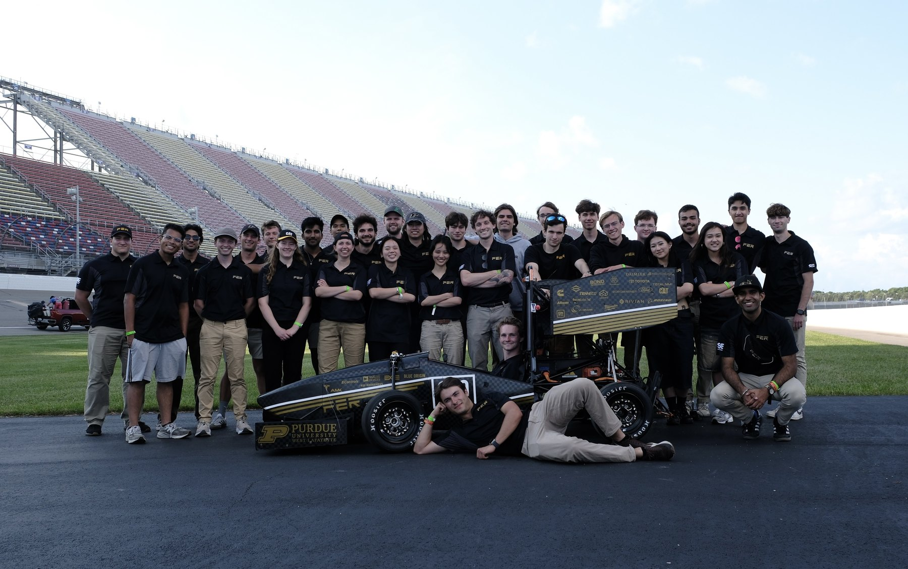
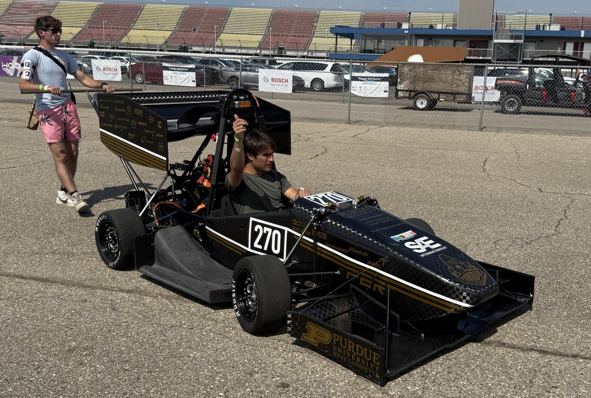

Purdue Electric Racing 2025
I was President of Purdue Electric Racing for the 2024 to 2025 season, running a 110-person team across seven sub-teams on a $100,000 budget. That season the team got its first ever finish and its first ever top 10, in the same year.

First ever finish
The car completed every event at competition. In the team's history it had never done that before.
First ever top 10
Finishing every event put the team inside the top ten overall, also for the first time.
110 teammates
Seven sub-teams and a $100,000 budget, across a full design, build and test season.
Finishing is the hard part
In Formula SAE the trophy is not really for the fastest car. It is for the car that is still running at the end. A team can spend a year on a genuinely quick vehicle and score almost nothing, because technical inspection is unforgiving and the endurance event will find whatever you did not finish. Most of what separates a team that completes every event from one that does not happens months earlier, in decisions that have nothing to do with lap time.
Which is why the two firsts are really one result. Finishing every event was the goal; the first ever top 10 followed from it, because points you cannot score in an event you did not complete are the ones that were keeping the team out of the top ten in the first place.
So the job was not to make the car faster. It was to make sure that on the day, every part of it worked with every other part.

Where student teams actually break
A 110-person team split into seven sub-teams produces good subsystems and bad interfaces. Each group optimizes the thing it owns and is measured on, and the failures collect in the gaps between them: the connector that two teams each assumed the other was specifying, the enclosure that fits the chassis but not the harness, the packaging decision made in isolation that nobody revisits until assembly week. Nobody is doing anything wrong. The org chart just has seams, and physical integration does not care about the org chart.
The interfaces were the deliverable. Everything else the team was already good at.
I owned integration of the car's high-voltage and low-voltage electrical systems, which in practice meant sitting between the Battery, LV, and Drivetrain sub-teams and forcing the interface conversations that would otherwise have been discovered during assembly. Closing a communication gap early is cheap. Closing it at competition is usually not possible at all.
Hands on the hardware
Alongside the presidency I owned the design and integration of every low-voltage enclosure on the car, and packaged them into the chassis and battery pack with the Vehicle Dynamics team. An enclosure has to satisfy three constraints at once and they pull against each other: it has to fit mechanically in space that other sub-teams are also claiming, it has to route and terminate its harness without compromising clearance or serviceability, and it has to survive its own thermal load in a sealed volume next to a battery pack. Solving any two of those is straightforward. All three at once, across a whole vehicle, is the actual work.
Before the presidency
I joined the team in 2021 and was Drivetrain Lead for the 2023 season, where I helped develop and manufacture the second generation of our in-hub planetary gearboxes. That project is worth its own page.